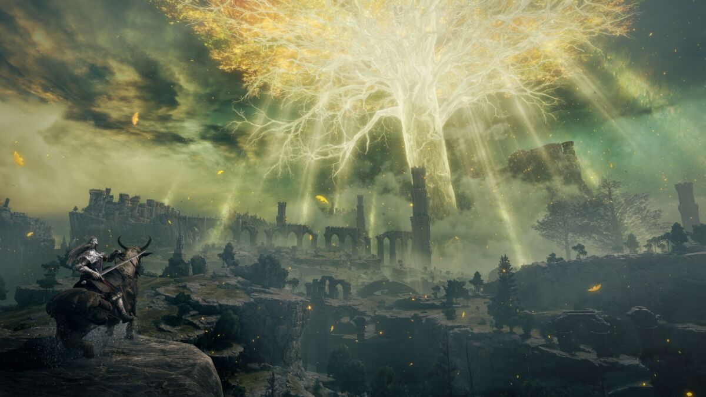
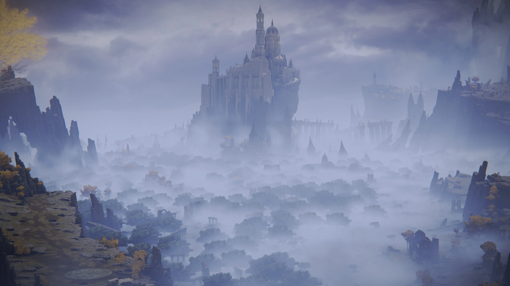
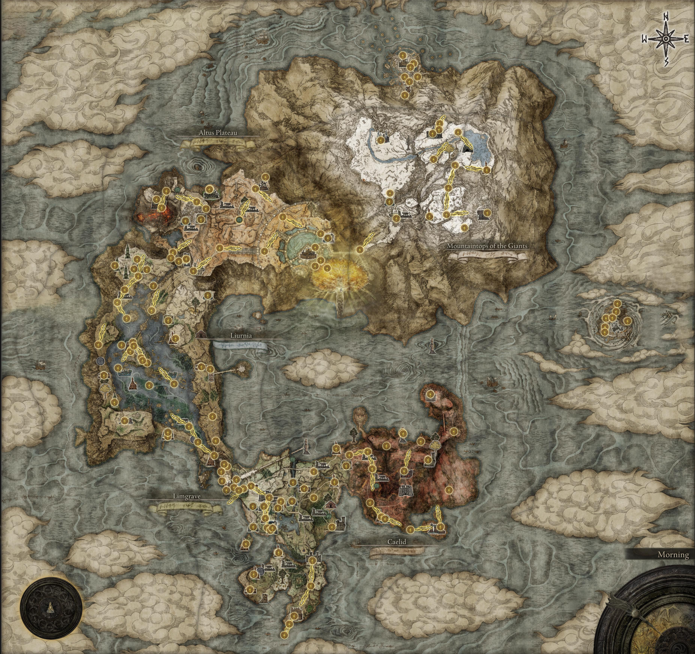
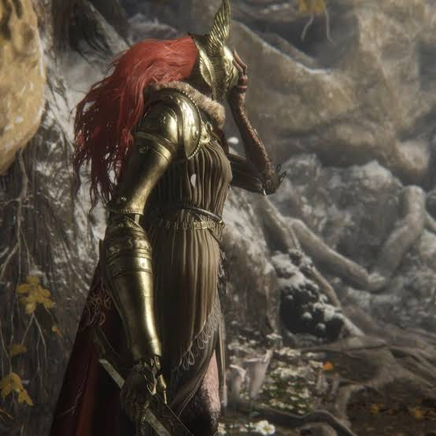
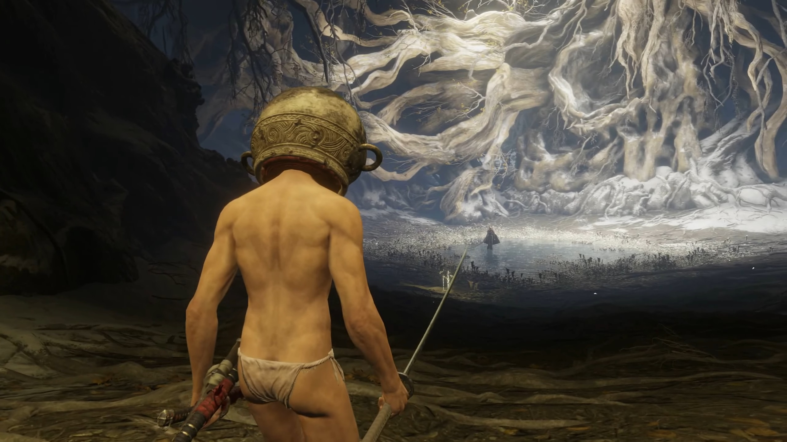
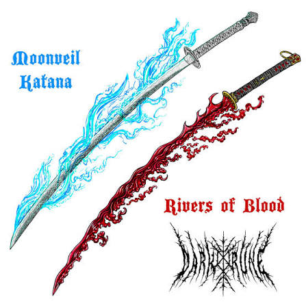
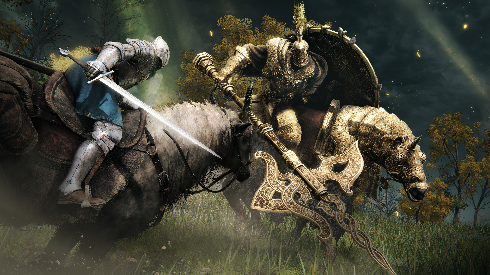
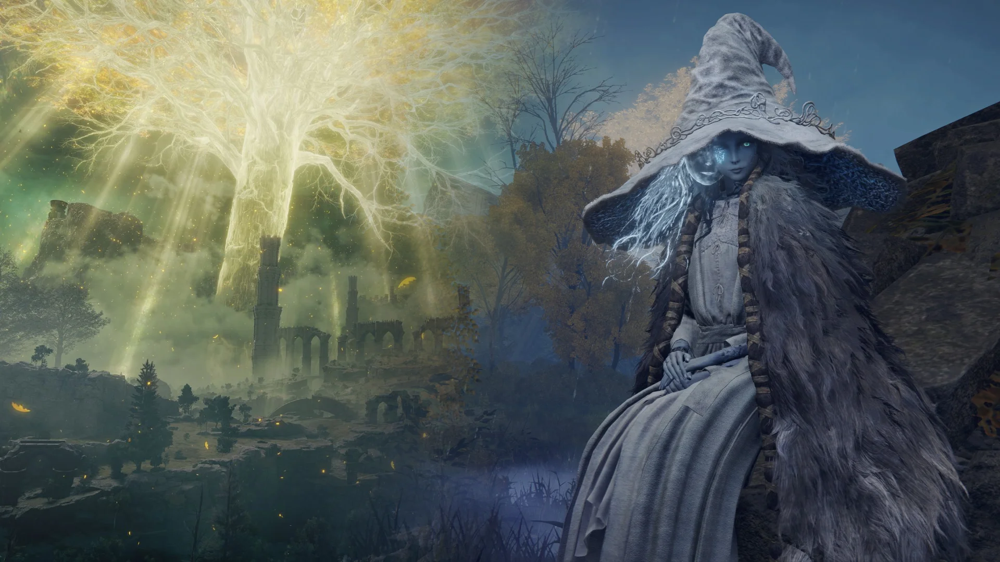
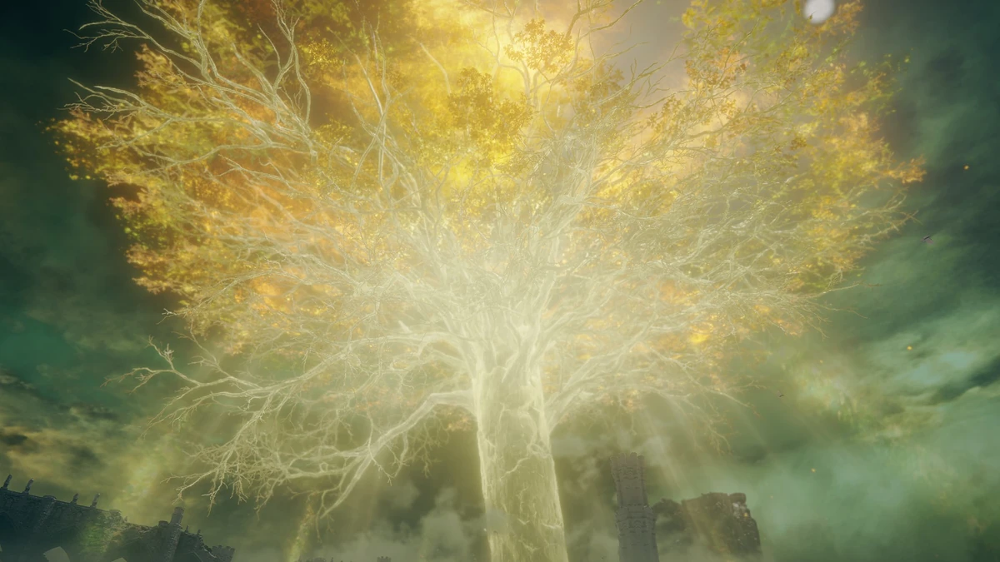

The Lands Between stand broken, fractured by the shattering of the Elden Ring and the catastrophic war known as the Shattering that followed. Governed by Queen Marika the Eternal, this vast world was once blessed by the Golden Order and the giant Erd-tree whose leaves showered grace upon the land. Now, demigod children—each claiming a fragment of the shattered Great Runes—fight over the remnants of power, driven mad by their newfound strength. As a tarnished, a soul once exiled from grace and called back by destiny, you awaken in a graveyard of fallen champions to claim the title of Elden Lord.

Traversing the shimmering golden plains of Limgrave to the rotting red wastes of Caelid and the sunken academies of Liurnia, the journey is an intricate tapestry of cosmic gods, tragic betrayals, and forgotten lineages. Guided by the enigmatic Maiden Melina and tested by legendary foes like Malenia, Blade of Miquella, and Starscourge Radahn, your choices will ultimately determine the future of the Lands Between. Will you restore the shattered Golden Order, usher in a new age of stars, or burn the world away in the chaotic flames of the Frenzied Flame?



Malenia, Blade of Miquella: The infamous rot goddess known for her devastating Waterfowl Dance attack and her undefeated lore status ("I have never known defeat").

Let Me Solo Her: A legendary player who became an Internet icon by helping thousands beat Malenia wearing nothing but a jar on his head.

Rivers of Blood / Moonveil: The two most widely used and meme-worthy katanas in the game, known for their overpowered special skill attacks.

Torrent: The spectral steed that allows players to seamlessly traverse the massive open expanse of the Lands Between.

Ranni the Witch: The four-armed fan-favorite NPC who drives one of the game's largest questlines and leads to the popular "Age of Stars" ending.

The Erdtree is the colossal, glowing golden tree at the center of Elden Ring, serving as the physical manifestation of the Elden Ring and the ultimate destination of your quest.